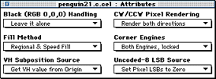
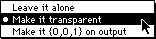
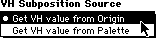
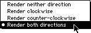
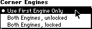
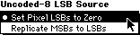
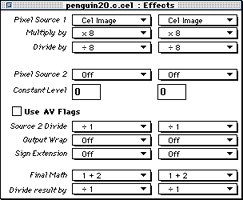

Click on one of the topics below for more information:

Figure 1: Attributes editor
The Attributes editor options let you set the CCB flags for a cel. Each pulldown menu and its options is covered in this section.
BGND-Decides 000 decoder value treatment. 1=pass 000 as RGB value into the pixel processor; 0=skip the pixel processor and treat the pixel as transparent.
NOBLK-1=write 000 pixel as 001; 0=write the pixel as 000. This flag is only read if the BGND flag is set to 1.

Figure 2: Black Handling menu.
MARIA-1=disable regional fill (speed fill only); 0=enable regional fill.
Figure 3: Fill Method method.
PLUTOPS-Derives the VH value from the PLUT or CCB. 1=get the VH value from the PLUT; 0=get the VH value from subposition specified by the origin location.

Figure 4: VH Substitution Source menu.
ACW-Enables clockwise pixel rendering. 1=render CW pixels; 0=don't render CW pixels.
ACCW-Enables counterclockwise pixel rendering. 1=render CCW pixels; 0=don't render CCW pixels.

Figure 5: CW/CWW Pixel Rendering menu.
LCE-1=lock the two corner engines together; 0=allow only the first corner engine to function.
ACE-1=allow both corner engines to function; 0=allow only the first corner engine to function.

Figure 6: Corner Engines menu.
REP8-Controls bit replication in an uncoded 8-bpp cel. If 1, missing low-order bits are replicated from the high-order bits. If 0, missing low-order bits are set to 0.

Figure 7: Uncoded-8 LSB Source menu
Effects editor
The Effects editor allows you to adjust the PIXC settings for a cel. The PIXC settings define how the pixels of a cel display, the characteristics they have. PIXC settings along with the P-Mode setting let you adjust how the pixels in the frame buffer are mixed with the pixels in the cel. This functionality is what lets your create 3DO special effects in cels.
For example you can define the level of translucency for a cel, as shown in the example in Editing cel effects
For detailed information on how the PIXC works, see Introduction to 3DO Graphics.

Figure 8: Effects editor.